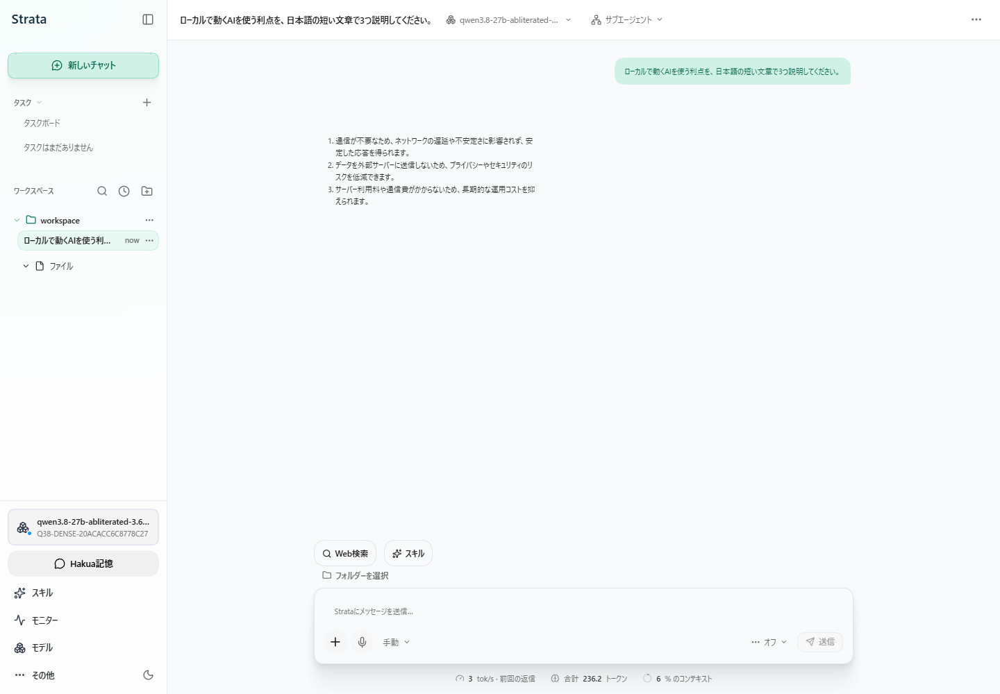

Qwen3.8-27B native CUDA 13.5 preview
Optional engine for Strata desktop 0.6.3 on Windows. The signed preview passed two Japanese chat turns, mid-response Stop, and explicit unload on an RTX 5060 Ti with 16 GB VRAM.
Short F16 prefill took 35–43% less time than the native control in two initial-request pairs. Prism llama.cpp still decoded faster in the matched first-request comparison. This is not a warm-parity or full-context claim.
Download and setup instructions · Recommended GGUF. Thanks to soyaakinohara for the quantization and to AEON-7 for the source weights. Add the preview public key and enable short F16 prefill in the launch session as documented; the existing installer and stable release are unchanged.
Hakua / Strata 0.6.0 — Windows x64 Release & Real-Model Verification
Product 0.6.0 (App 21013e19b · Component/Control b1cabf926 · Native Q38 8b0b3c745) — synced with upstream 0.2.15 (c775728069).
Includes the native Windows CUDA 13 SM120 strata-q38.exe runner for Qwen3.8-27B-family GGUF models, Japanese instruction/finite-suppression profile, /btw subagents, workflow skill learning, and RustXNG 0.31.1 Full. Full-window inference, general model quality, and GPU concurrency remain unqualified (releaseQualified=false).
Released Windows NSIS (unsigned):
v0.6.0
→ Strata-0.6.0-windows-x64-setup.exe ·
tar.7z ·
SHA256SUMS.txt

qwen3.8-27b-abliterated-3.69bpw-12GB-MTP.gguf via strata-q38.exe on RTX 5060 Ti 16 GB (installed-q38-r8).Local inference, with measured limits
Desktop and Terminal interfaces for native inference and compatible GGUF models. Actual 4K and 32K generation is documented; full 131k certification remains open.
Start-Process https://github.com/zapabob/Strata/releases/tag/v0.3.2-preview.20261029.2
What this preview changes
Measured on RTX 5060 Ti 16 GiB and 32 GiB RAM. Model compatibility depends on the selected backend.
Qwen3.8 inference verified
Q2_0, configured capacity 131072, spec4 + MTP and k8v4 completed exact 4096- and 32768-token requests. This does not certify full-length inference.
Actual generationLocal GGUF import
Inspect local text GGUF files and offer a generic backend when native import is unsupported. Loading still checks actual backend compatibility.
Explicit compatibility checksStartup resource lifetime
Join completed prefetch threads so their I/O scratch is released. CPU failure-injection tests and the CUDA build have separate evidence.
Measured startup fixOptional memory harness
Disabled by default. Per-user isolation, approved persona files and explicit per-turn consent are required. Runtime resource qualification remains open.
Opt-in; qualification openLong local requests
The quiet local inference allowance is 30 minutes. Remote and tool limits remain separate. Cancellation and subsequent recovery passed real Harness tests.
Finite timeout and cancellationWindows CUDA SM120 preview
The tested artifact targets Windows x64 and RTX 5060 Ti. HIP, SYCL, other GPUs and image inference are not qualified by these results.
Hardware scope statedRTX 5060 Ti 16 GiB + RAM 32 GiB
One synthetic recall task; diagnostics OFF. First and repeated requests each generated 52 tokens. No paired statistical speed or broad quality conclusion.
| Input / request | Configuration | Peak Job commit | Prompt time | Decode time (52 tokens) |
|---|---|---|---|---|
| 4096 / first | Qwen3.8 Q2_0, spec4 + MTP | 22.14 GiB | 105.562 s | 13.531 s |
| 32768 / first | Qwen3.8 Q2_0, spec4 + MTP | 22.69 GiB | 494.758 s | 13.759 s |
| 32768 / repeated | Same run; prefix reuse | 22.69 GiB (run peak) | 0.646 s | 3.255 s |
Desktop, Control and inference backend
Separate processes manage the interface, model lifecycle and inference. Ownership checks stop recovery when a child cannot be identified.
Host GUI & Web Interface
Vite + React + Tauri shell. Non-blocking async WebSocket & SSE streaming.
Strata Control & Agent Runtime
Python profile and runtime ownership management, model setup and API service. Optional memory integration is disabled by default.
Native C++/CUDA Inference Engine
The native CUDA engine and the separately packaged generic GGUF backend. Support and resource needs depend on model and configuration.
Download Releases
Preview archives have SHA-256 checksums and dependency manifests. Read their scope and installation instructions before applying an overlay.
Strata 0.3.2-preview.20261029.2 (unsigned NSIS)
Overwrite-capable Windows x64 setup. Unsigned preview; signed feed/Tauri updater is not included. Keep your models folder when upgrading.
v0.3.2-preview.20261028.1 (source sync)
Fork tip notes after merging official Strata v0.2.7.1. No installer asset on this tag — use the NSIS card for setup.exe.